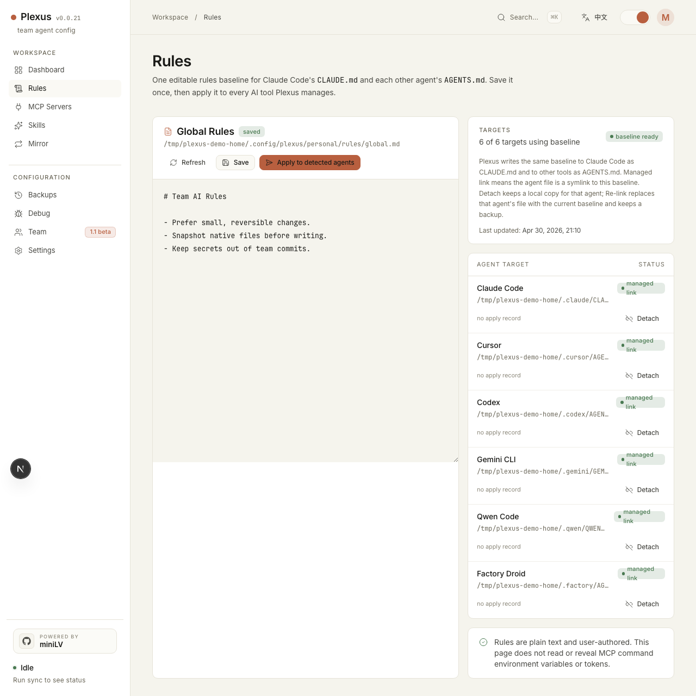

Claude Code expects CLAUDE.md. Most other AI coding tools expect
AGENTS.md or another tool-specific instruction file. The files are different
enough that teams often duplicate them, then slowly drift as prompts, coding standards,
or review expectations change over time.
Why this drift matters
- The same repo behaves differently depending on which agent you use.
- A fix in one instruction file does not automatically reach the others.
- Team rules become unreliable because each tool reads a slightly different baseline.
It is usually one missing paragraph, one stale command, or one different wording about testing. That is enough to create inconsistent behavior across tools.
A cleaner model for instruction files
The practical model is one baseline for rules, then projection into each tool's native
instruction file. Instead of editing CLAUDE.md and AGENTS.md by
hand in parallel, you maintain one source of truth and let a local tool render or link
it into the right location for each agent.

Plexus stores that baseline under ~/.config/plexus/personal/rules/global.md,
then projects it into Claude Code as CLAUDE.md and into other tools as
their native instruction files. It snapshots before writes and lets you detach or restore
if a tool needs a local override.
What this gives you
- One place to update shared coding rules and agent behavior.
- Less risk of Claude Code and Codex drifting apart on the same repo.
- A clearer review model when the team wants to inspect rule changes.
- Backups before rewriting native instruction files.
Quick start
npx -y plexus-agent-config@latest startStart the local dashboard, open the rules view, set the global baseline once, then sync it to the agents you already use. Plexus will project the same baseline into each native instruction file instead of making you edit duplicates by hand.